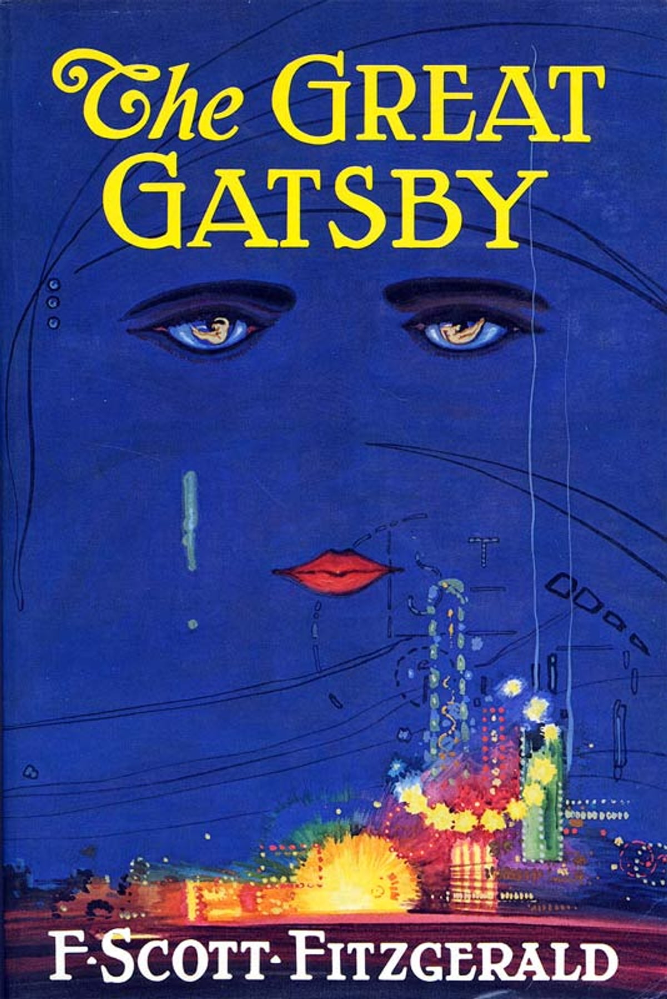

The Great Gatsby
More Information
See this linkPlot:
The story is narrated by Nick Carraway, a young man who moves to New York City in the summer of 1922 to work in the bond business. He rents a small house in the fictional town of West Egg on Long Island, right across the bay from the extravagant mansion of Jay Gatsby.
Gatsby is a mysterious and wealthy man, known for throwing extravagant parties. Despite his opulent lifestyle, he is elusive and keeps his true background and sources of wealth a secret. Rumors circulate about him, and he becomes the subject of much speculation and gossip among the elite of Long Island.
As the story unfolds, Nick becomes entangled in the lives of his wealthy neighbors, including Gatsby. He learns that Gatsby's primary motivation in amassing his wealth and hosting lavish parties is to win back the love of Daisy Buchanan, a married woman he was once romantically involved with.
Daisy is married to Tom Buchanan, a wealthy and arrogant man who is having an affair. Gatsby believes that if he can demonstrate his wealth and success, Daisy will leave Tom and be with him again.
The novel explores the complexities of love, obsession, and the hollowness of the American Dream as Gatsby's relentless pursuit of Daisy leads to tragic consequences. The characters' lives become entangled in a web of deceit, betrayal, and unfulfilled desires.
"The Great Gatsby" is a captivating portrayal of the excesses and shallowness of the Jazz Age, and it remains a timeless critique of the elusive and often unattainable nature of the American Dream. Through its vivid characters and lush descriptions, the novel delves into the themes of love, identity, and the pursuit of happiness, making it one of the most celebrated works of American literature.